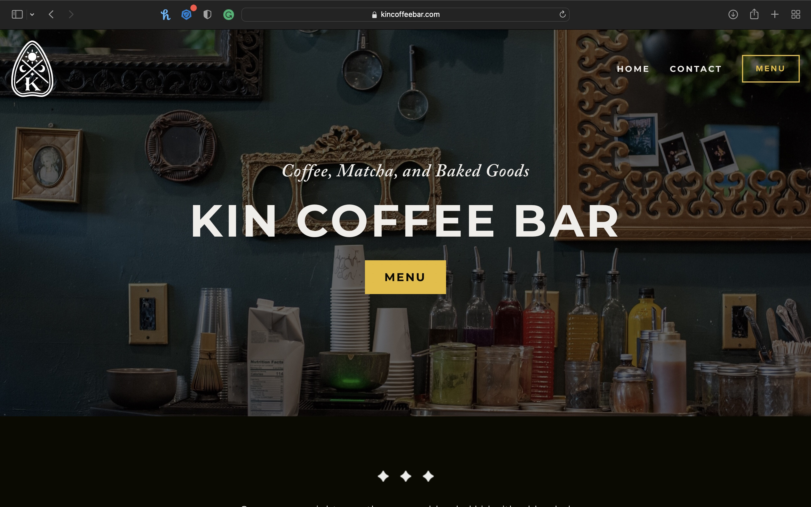
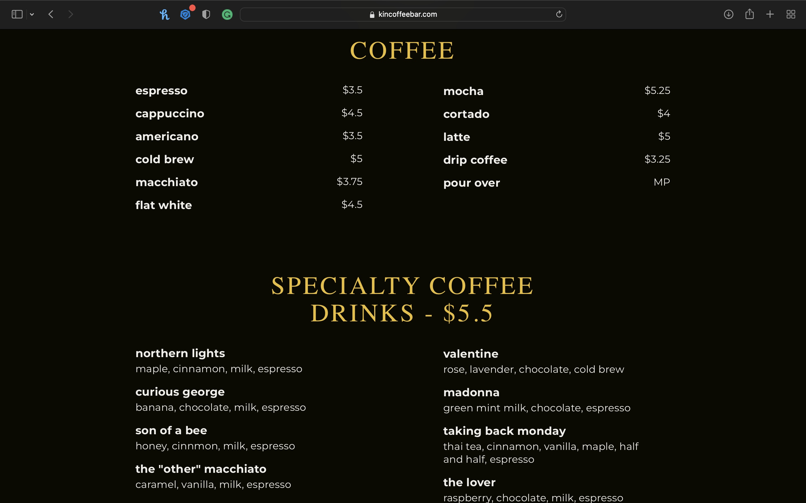

Aspire Cafe
A cafe inspired by childhood movies from your favorite animation company Studio Ghibli. This cozy space is decorated with lots of foliage and often plays Studio Ghibli music in the background.
Studio Ghibli fans will love to hang out in an area that resembles the aesthetics of Studio Ghibli films. Since Studio Ghibli is an animation film company, people of all ages will enjoy this cafe!
This safe space is for people who want to study in a relaxing, cozy space with an amazing ambience. Additionally, it can be a tourist attraction for many visitors to come check out!
(I don't support them anymore but I like their aesthetic and layout.)
 Study within your favorite childhood movie.
[spread of coffee/tea/drinks on a dark background]
A cafe inspired by childhood movies from your favorite animation company Studio Ghibli. This cozy space is decorated with lots of foliage and often plays Studio Ghibli music in the background. This safe space is for people who want to study in a relaxing, cozy space with an amazing ambience. Additionally, it can be a tourist attraction for many visitors to come check out!
[picture of the inside of the cafe]
Our signature drinks based on your favorite Studio Ghibli films.
[picture of all of the drinks]
Ceylon tea, Evaporated Coconut Milk, Espresso
Cascara, Vanilla, Black Pepper, Cordinal, Lime, and Oat Milk Latte
Green Milk Tea infused with Strawberry
Taro and Butterfly Pea Flower Tea Latte
Jasmine Tea Infused with Yellow Mango Puree
Taro Milk Tea Infused with Activated Charcoal
Butterfly Pea Flower Tea with Lemon Sparkling Water
Hojicha Latte Infused with Taro Chunks
[front of cafe storefront]
Find us at:
1242 Monterey St Suite 110,
San Luis Obispo, CA 93401
(805) 123-4567
info@aspirecafe.com
Want to join the Aspire crew?
Send your résumé to jobs@aspirecafe.com